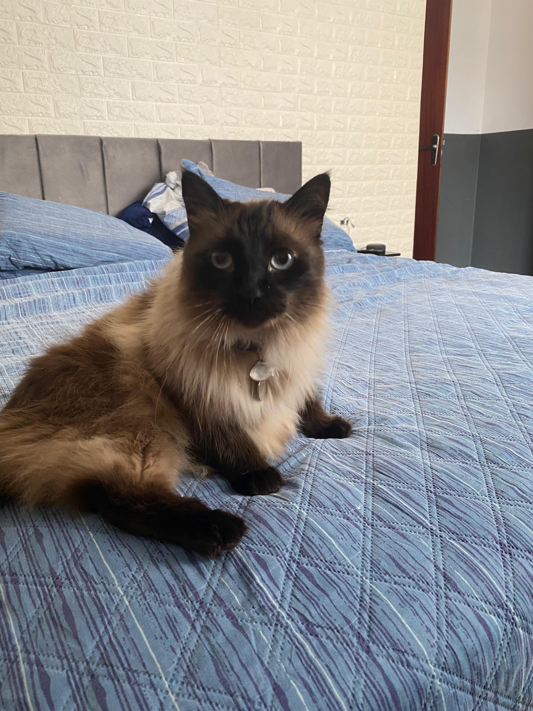

Caco foi um gato doméstico da raça siamês, lembrado com muito carinho por sua personalidade única e pela forte ligação com sua família.
Caco foi adotado quando tinha apenas um ano de idade, chegando para transformar a rotina da casa com sua presença marcante. Desde o início, demonstrou ser um companheiro leal, carinhoso e cheio de vida.
Com o tempo, infelizmente, foi diagnosticado com FeLV (Vírus da Leucemia Felina), uma condição que afeta o sistema imunológico dos gatos. Mesmo diante desse desafio, Caco viveu de forma plena e cercado de cuidado.
Ele viveu até os 5 anos de idade — um tempo significativo para um gato com esse diagnóstico. Sua trajetória é lembrada como um reflexo de todo o amor, dedicação e carinho que recebeu de sua família ao longo da vida.
Hoje, Caco não está mais entre nós, mas sua memória permanece viva, marcada pelos momentos especiais e pela alegria que proporcionou a todos ao seu redor.

Nome: Caco
Espécie: Gato doméstico
Raça: Siamês
Adoção: 1 ano de idade
Falecimento: 5 anos